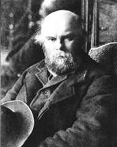

Поль Верлен
Роки життя:1844−1896
Читати:
Верлен народився у сім'ї армійського офіцера, який помер у 1865 р. Майбутнього поета ще в дитячому віці відправили в Париж для навчання в ліцеї Бонапарта, де він і почав писати вірші. Закінчивши у 1862 р. ліцей, Верлен отримав місце чиновника в Паризькій ратуші. У цей час став постійним відвідувачем паризьких літературних кафе, де познайомився з К. Мендесом, С. Прюдомом, А. Франсом, Ф. Копе.
У 1865 р. запропонував журналові «Мистецтво» дві поеми та статті про Б. Д'Оревіллі та Ш. Бодлера, а наступного року опублікував декілька своїх віршів у колективній збірці «Сучасний Парнас» («Parnasse contemporain»).
У першій поетичній збірці Верлена «Сатурнічні поезії»(«Les poemes satumins», 1866) помітний вплив парнаської естетики та творчості Ш. Бодлера. Парнаський вплив проявляється у пластичній виразності образу, у ретельному відшліфовуванні вірша, у матеріальній згущеності, зримості та відчутності світу. У збірці ще зберігається парнаська рівновага об'єктивного та суб'єктивного начал у структурі поетичного образу. Бодлерівська традиція прослідковується у загальній мінорній тональності віршів, у тонкості відчуттів і загостреній сприйнятливості, а також у розробці урбаністичної теми («Містичні вечорові зблиски», «Сентиментальна прогулянка», «Осіння пісня»).
Проте вже в цій збірці проявляються риси оригінального бодлерівського стилю: меланхолійна інтонація, нюансування образу; музичність, явлена не лише як віртуозне оркестрування вірша, а й перш за все як уміння відтворити найтонші порухи, «музику» душі.
У збірці «Вишукані свята» («Les fetes galantes», 1869) часто вбачали твори дилетанта і декадента, прихильника теорії «мистецтва для мистецтва». Збірка є серією витончених пейзажів, картинок, замальовок, які відображають вишукані розваги дам і кавалерів XVIII ст. Верлен використовує парнаський прийом звернення не до живої природи, а до її відображення у призмі мистецтва. Його надихали полотна Ж.А. Ватто, Ж.О. Фрагонара, Ж.-Б. Грьоза.
«Вишукані свята» — своєрідна спроба поета віднайти притулок у далекій епосі, за допомогою уяви розчинитися у її казковому, театралізованому світі. Пейзажні замальовки набувають характеру «пейзажів душі», у яких спостереження за реальною дійсністю поглинаються суб'єктивними враженнями поета, розчиняються у його сприйнятті та підпорядковуються завданню — висловити відтінки душевного стану ліричного героя («Місячне сяйво», «На прогулянці», «У півголоса»). Такий поетичний підхід призвів до посилення меланхолійної тональності збірки, до подальшого «розречевлення» матеріального світу і до посилення суб'єктивного начала у структурі поетичного образу. Проте загальна тенденція до суб'єктивізації художнього світу поки що не призводить до стирання меж поміж реальним та уявним, до послаблення контурів предмета.
Збірка «Добра пісня» («La bonne chanson», 1870) включає вірші, присвячені коханій Верлена, його нареченій Матильді Моте, з якою він познайомився у 1869 p., коли Матильді виповнилося 16 років. Верлен любив цю свою збірку найбільше, оскільки «Добра пісня» була «перш за все щирою і задуманою так любо, ніжно і чисто... написаною так просто».
Дійсно, «Добра пісня» — найжиттєрадісніша з-поміж поетичних збірок Верлена, де йдеться про відродження ліричного героя під впливом кохання. Кохання у Верлена не стільки пристрасне і болісне почуття, скільки ніжна млість. На противагу бодлерівській пристрасній чуттєвості, Верлен віддає перевагу стриманості та цнотливості. У вірші «Поки перший промінь зронить...» поет, змальовуючи світанок, звертається подумки до коханої і просить ранкову зірку:
... думки мої співочі
Понеси в далеку даль,
— Мерехкоче
Скрізь роса, немов кришталь, —
Де спить мила, ти, лелітко,
Їй про мене нагадай...
— Швидко, швидко,
Сонце йде на небокрай!
(Тут і далі пер. М. Лукаша)
Коли батько поета, військовий інженер, пішов у відставку і матеріальний стан родини погіршився, Верлену довелося піти працювати дрібним службовцем у Паризьку міську ратушу. У 1870 році, сподіваючись на подружнє щастя та сімейний затишок, він одружився з М. Моте. Проте його сподівання спочатку похитнула Паризька комуна, у дні якої він, «найчервоніший із червоних», працював у прес-бюро комунарської преси. Після «кривавого тижня», рятуючись від переслідувань, Верлен покинув дім, дружину, сина і виїхав із Франції. Чималу роль тут зіграло і знайомство з юним А. Рембо, з яким Верлен познайомився у вересні 1871 р. Між поетами склалися більш ніж дружні стосунки, тому, щоб не компрометувати свою родину, Верлен улітку 1872 р. подався зі своїм другом у Бельгію, а згодом в Англію, де вони вели богемний спосіб життя.
У липні 1873 р. в Брюсселі під час чергової сварки Верлен вистрелив у Рембо, поранивши його, і був засуджений брюссельським судом до дворічного ув'язнення. У в'язниці Верлен написав вірші найкращої своєї поетичної збірки «Романси без слів» («Romances sans paroles», 1874), яка складається із циклів «Забуті арієти» («Ariettes oubliees») і «Бельгійські краєвиди» («Paysages beiges»).
«Романси без слів» — вершина імпресіоністської лірики Верлена. Збірка є серією замальовок, мотивів, фрагментів, пейзажів. Імпресіоністська суб'єктивація та дематеріалізація дійсності сягає найвищого ступеня. Вдосконалюється майстерність нюансування образу, зростають гнучкість і задушевність поетичної інтонації. Художньо викінченим стає верленівський «пейзаж душі», хрестоматійним взірцем якого вважають вірш «Із серця рветься плач... «Ця миттєва імпресіоністська замальовка картини дощу перетворюється в опис душевного стану ліричного героя, для якого враження стає лише поштовхом для висловлення відтінків свого душевного стану:
О, хлюпотіння зливи
По крівлях, по землі!
На серце нещасливе
Спливають співи зливи...
Загальну тональність вірша вирізняє імпресіоністська приглушеність звуків і фарб. Слова втрачають свою семантичну і кольористичну функцію, утворюючи мелодію, яка відтворює музику душі ліричного героя. Верлен широко використовує для надання музичності віршу повтори, створює систему алітерацій та асонансів:
Il pleure dans mon coeur
Comme il pleut sur la ville.
Quelle est cette langueur
Qui penetre mon coeur?
Багаторазове повторення в одному рядкові довгого звука [э:], який не має аналогів в українській мові, дозволяє поетові якнайкраще не лише на вербальному, а й на сугестивному рівнях передати, навіяти читачеві меланхолійний настрій ліричного героя, змушує весь вірш звучати як стогін ніжної та самотньої душі.
Таким чином, у найбільш імпресіоністській зі своїх збірок Верлен зробив рішучий крок у напрямі заміни змісту звучанням, до злиття поезії та музики і, в кінцевому підсумку, — до «безсловесності» поезії.
Поетичним маніфестом імпресіоністської та символістської лірики стала поезія Верлена. «Поетичне мистецтво»(«Artpoetique»), написана у 1874, а видана у 1882 році. Верлен закликає до музичності як найважливішого принципу нової поезії («De la musigue avant toute chose»). Причому музичність трактується широко, як подолання в поезії всього, що заважає розкутості ліричного самовираження: законів логіки та здорового глузду, усталених норм віршування, установки на віртуозність і змістовність, точність контуру. Поет — медіум, який керується інтуїцією, а не логікою. Справжня поезія — відтворення невідтворюваного. Верлен завершує свій вірш такою настановою, зверненою до поета:
...Щоб мчав, де далеч не похмура,
Де чари віє вітерець,
Де пахне м'ята і чебрець...
А решта все — література.
(Пер. Г. Кочура)
У збірку «Мудрість» («Sagesse», 1881) увійшли вірші, написані Верленом у в'язниці та одразу ж після звільнення. У в'язниці відбулося навернення Верлена у католицьку віру. У «Мудрості» Верлен звертається до Бога, почасти другий глибинний план образу-символу посідає не людська душа, а Бог, відбувається перехід поета від «гуманістичного» до «релігійного символізму» (Д. Обломієвський).
Попри неоднозначність критичного поціновування, безсумнівно, що збірка «Мудрість» засвідчила зрілість верленівського символізму, у творчості поета вона найтиповіша для символістської поезії. У ній остаточно перемагає тенденція до об'єктивізації суб'єктивного, поміж явищами встановлюються трансцедентальні відносини.
Після звільнення із в'язниці у січні 1875 p., переживши релігійне навернення, Верлен намагається упродовж кількох років жити як порядний християнин, викладає в Англії, а згодом після повернення на батьківщину — в колежі Ретеля, організовує ферму, яка з часом повільно занепадає, і Верлен повертається до свого колишнього невпорядкованого способу життя.
Пізній творчості поета притаманна двоїстість. Він немовби розривається поміж містичною спрямованістю своїх католицьких прозрінь і чуттєвими бажаннями. Помітно посилюються декадентські тенденції у пізніх поетичних збірках Верлена: «Далеке та близьке» («Jadis et Naguere», 1884), «Кохання»(«Amour», 1888), «Паралельно» («Parallelement», 1889), «Щастя» («Bonheur», 1891) «Пісні для неї» («Chansons рош ЕПе», 1891), «Оди на її честь» («Odes en son honneur», 1893).
Після смерті матері у 1886 р. Верлен зостався практично без засобів до існування. Він жив у нетрях і злиднях, часто хворів.
Верлен став досить відомим одразу ж після того, як вийшла друком його серія літературних портретів під загальною назвою «Прокляті поети» («Les Poetes maudits», 1884). Широкий загал побачив у цьому завсідникові паризьких поетичних кав'ярень і госпіталів великого поета, який відкрив Т. Корб'єра, А. Рембо, С. Малларме, нариси про яких були поміщені у «Проклятих поетах».
У книзі був літературний портрет і самого Верлена під назвою «Бідний Ліліан» («Pauvre Lelian» — анаграма імені Поля Верлена). Бродяга та скандаліст постав несподівано у свідомості читача метром символізму. Від нього чекали наставлянь, публічних лекцій, спогадів. Він відгукнувся на ці сподівання й опублікував прозові праці мемуарного та автобіографічного характеру: «Нотатки вдівця» (1886), «Мої лікарні» (1891), «Мої в'язниці» («Mzs Prisons», 1893), «П'ятнадцять днів у Голландії» («Quinze jours en Hollande», 1893), «Сповідь» («Confessions», 1895). У 1894 p., незабаром після смерті Ш. Леконта де Ліля, Верлена проголосили «королем поетів».
Верлен помер у безпросвітніх злиднях у січні 1896 р. Натовп літераторів і шанувальників його таланту супроводжував гроб поета від церкви Сент-Етьєн дю Мон на кладовище.